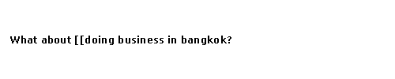
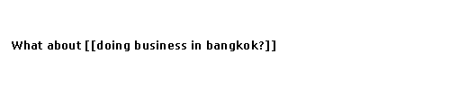
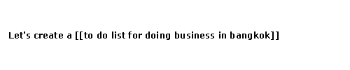
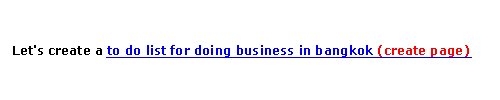

| | |
Table of Contents | Last | Next
Walkthrough - Seamless Collaboration
AutoLink at the Speed of Thought
Paper Airplane has a unique feature known as AutoLinking, which makes creating hyperlinks as easy as thinking. One of the major goals of Paper Airplane is to transform creating Two Way Web Sites into acts of conversation rather than technical tinkering and configuring. When we have conversations with other people, we refer to concepts and documents by their names, such as "What about doing business in Bangkok?" or "Make sure to see the third quarter financial results." When we are on the older web, we are forced to modify how we have conversations by using complex and technical URLs. For example, to ask the previous questions in the context of a web page, one would have to type "What about http://www.bangkok.com/DoingBusiness.html?" or "Make sure to see http://www.acme.com/financial/ThirdQuarter.xls."
Paper Airplane changes this by making the act of creating hyperlinks as transparent as thinking. To hyperlink to any other page on a Two Way Web Site, all a user needs to do is surround a page name with two open brackets, such as [[, and two closed brackets, such as ]]. For example, if the user types What about [[doing business in bangkok]]? in the Paper Airplane editor, doing business in bangkok is automatically hyperlinked to point to a page with that name:

Beginning to type 'doing business in bangkok'...

Typed closing double-brackets...

Instantly, the brackets disappear and a link is created to a page with that name
The brackets disappear after being typed to make the hyperlink look more natural.
If a page name doesn't exist but was surrounded with brackets, then the word Create Page is placed after the hyperlink in parentheses:

Just finished typing the final double-brackets...

Instantly, the brackets disappear, the text between the brackets is underlined as a hyperlink, and (create page) is added
When the new hyperlink is clicked on, a new Paper Airplane editor window opens with a blank page automatically named from the AutoLinked name.
Page's on other Two Way Web Sites can also be referenced. For example, if a user types Make sure to see the interesting things going on at [[www.CodingInParadise.weblog: Why you should use open-source software]], then a hyperlink is automatically created to the page Why you should use open-source software on the Two Way Web Site www.CodingInParadise.weblog.
The simple idea of AutoLinking now makes creating pages and hyperlinks much more like conversation. For example, imagine the following scenario. First, imagine that a page named First Quarter Financials already exists on a Two Way Web Site named www.Acme.company. Someone creates a page named Discussion Of First Quarter Financials, and begins typing some critical comments of the first quarter financials. As they are typing their criticisms, they decide that they would like to create a list of ways to correct problems identified in the future; to start creating this, they merely refer to a page with a name along those lines, such as [[how to correct first quarter problems]]. Now this user can simply click the automatic hyperlink added to how to correct first quarter problems to begin creating the How To Correct First Quarter Problems page.
This process can continue spinning out, with pages being organically created and refered to without ever touching an http:// or moving away from concepts.
For more in-depth information see The Power of AutoLinking.